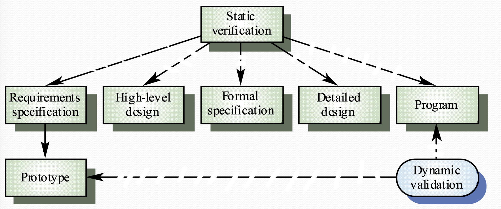
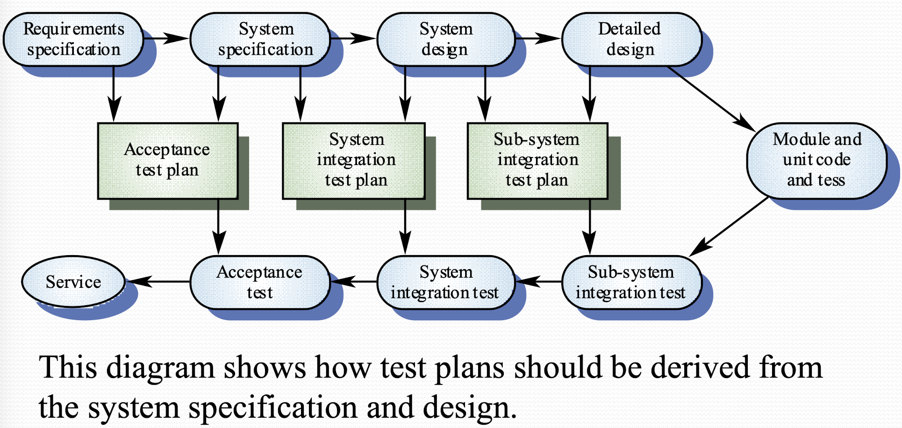

Verification and Validation
Verification & Validation
-
Verification: "If the program meets specification documentation"
-
Validation: "If the product meets user's expectation"
Validation > Verification
In development process
V&V must be applied at each stage in software process - To discovery defects in system - To assess whether system is usable
Static and Dynamic Verification
Software inspection (static verification):
- Looks at the system and code representation to see any problem
- supplement by tool-bases document and code analysis
- i.e. Bad variable name, uninitialized value...
Software testing (Dynamic verification):
- Concerned with the behavior of system under dynamic operation
- test by executing the system (test case) with test data to observe functional behavior
- This is only possible when an executable version of program is available. Which is an advantage of incremental development since a testable version of the system is available at an early stage
- Real data can be used as test input

Program testing
- Testing can reveal errors' presences BUT CANNOT tell errors' not existence
- A successful test can find one or more errors only once
- Nonfunctional requirements can be validated only by program testing
- Always used program testing with static verification to provide full V&V coverage
Testing in Agile
Agile development:
- Agile Development is test-driven
- Test cases are developed before coding
Benefits:
- Test could be created more validly, since it is based on specification purely
- All code will be tested
- Better suits specification
Types of Testing
Defect testing:
- Tests are designed to discover system defects
- A good defect test could reveal the presences of defects in a system
Statistical testing:
- Test to reflect the frequency of user inputs
- Used for reliability estimation
V&V Goal
"Verification and validation should establish a degree of confidence that the software is fit for purpose"
Could not ensure defect-free system
The degree of confidence expected is given by:
- Software function: How safety-critical the system should be
- User expectation: Difference users require various level of fitness with specification
- Marketing environment: Cheaper products may have lower standard of faults
Testing and Debugging
Debugging:
- Debugging is concerned with locating and repairing errors
- There is no simple process for debugging. It often involves looking for patterns in defective test output
- i.e. Syntax error could be caught by compiler and it will indicate the location of error and the type of error. Semantic error may occur in a compiled program but produce incorrect output, they are harder to detect
Testing:
- Testing is for find the existence of defects
- Regression testing: it's advisable to retest the program with all test data after fixed one error to make sure you don't create new problems
V&V Planning
- careful planning as required to get the most out of testing and inspection process
- you should plan when and how to conduct test along the development process
- ideally,you don't want to submit your untested code to repository

Structure of the software test plan
- the testing process is a description of the major phase of the testing process
- requirement traceability: testing should ensure all the requirements are individually tested
- Tested item: what part of system or functions should be tested
- testing schedule: an overall schedule for the testing of the software is required and resources must be allocated as part of the general project schedule
- Test recording: results of tests should be systematically recorded i
- Hardware requirement: some test should be done on hardware maybe
Software inspection
Software inspection check everything from requirement, specification, UML diagram, coding, test data, etc. - Involved people: programmer and another inspector - Inspection is only'looking' for problems. So you can start inspecting before implementation phase
Structural Testing
- AKA white box testing
- The objective is to make sure every statement (every line) of code is working correctly
Path Testing
- Make sure every branch (path) in program is tested and executed at least once
- Related to program flow diagram
- Minimum number of test you should do = "number of edges - number of nodes + 2" (in a program flow diagram)